The death of the Firstborn shook the world to its core. Those who once thrived under the magic of their creator gods now faced death and devastation. And yes, freedom of a kind, but at what cost? These are the stories of the fate of the Firstborn species in a world without Firstborn.
I. The Last
After the Godfall, no new elf is born.
The 36th ka, the generation born to fight Cha'mutte, is the last generation of elves to experience the Dreaming or the Rite of Awakening. Those few who still live remain ageless, but for what purpose? Without Aldanor, the Living Tree, and Elmerca, the Wild Star, the world is barren and increasingly alien.
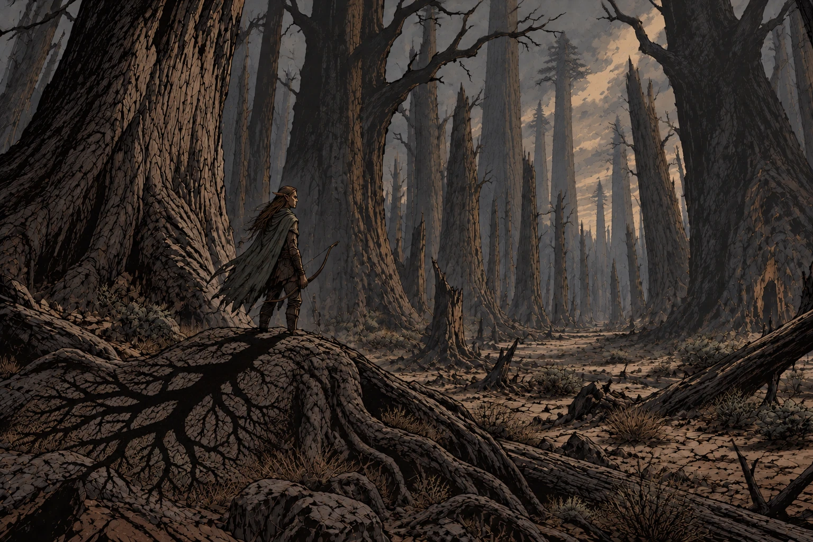
Some fight hopeless wars. Some guard empty forests for years, watching the trees slowly die in increasing summer drought, as Aldanor's magic no longer sustains the mists that sustain the great trees. But all of them gradually fade or depart by whatever paths remain open to them, and in the centuries after the Godfall, elves are nothing more than a myth of a lost world.
II. The Stony Silence
The stoneborn are extinct from the moment of the Godfall.
Every stoneborn becomes literal stone when Entamba dies. Mountain villages become fields of statues: people frozen at work, in prayer, embracing children, preparing meals. Some seem to have been struck down instantly, before they even realized the fate that was coming for them. Others, if one looks closely, seem to be turning in fear and alarm, looking towards some distant terror.
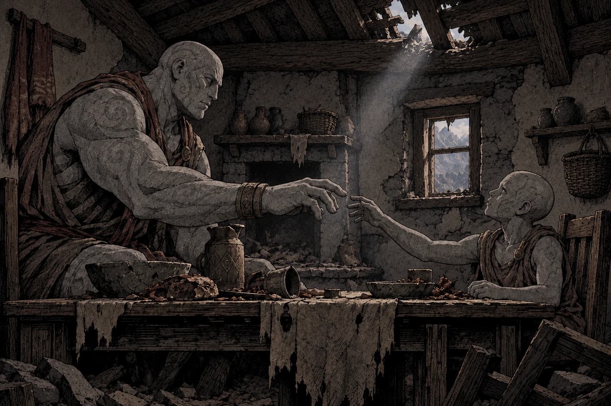
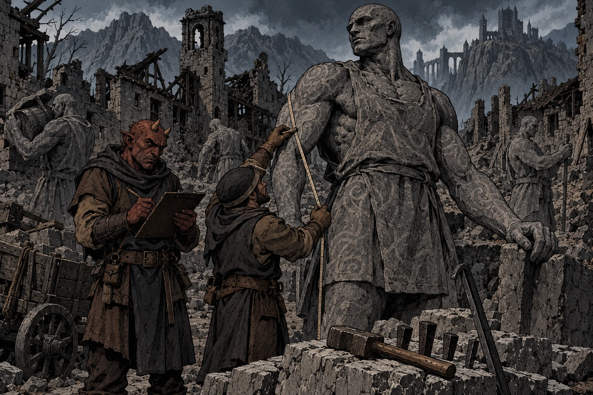
Few people visit these strange, haunted necropolises. The weather does not seem to touch them, and some dwarves regard these places as sacred, or whatever passes for sacred in the modern day. Prospectors -- hobgoblin entrepreneurs, Chardonian miners, and sometimes simply those down on their luck and desperate -- sometimes regard them as convenient sources of worked stone, lost treasure, or valuable minerals, and some now even begin to doubt whether they ever once moved.
III. The Great Famine
With the Godfall, the Bahrâzel die, and the runic magic of the dwarves fails.
The vast underground kingdoms of the dwarves lose their magical light, water, ventilation, and agriculture all at once. The Heart of the Mountain can no longer be reached, and no young dwarf receives a name or a thuhr from the gods.
Massive famines follow. Great numbers of dwarves flee the mountains, though many never reach the surface. The survivors become one of the largest refugee populations in the post-Godfall world. They fracture, and scatter. Some traditionalists gather together in sheltered valleys, trying to preserve clan and the memories of the dead thuhr, turning inward against the world, dreaming of reclaiming their lost mountain kingdoms against all odds.
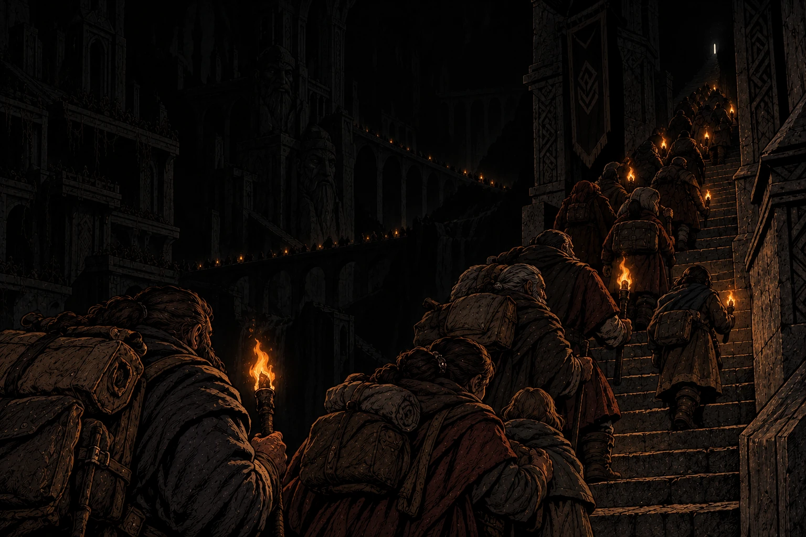
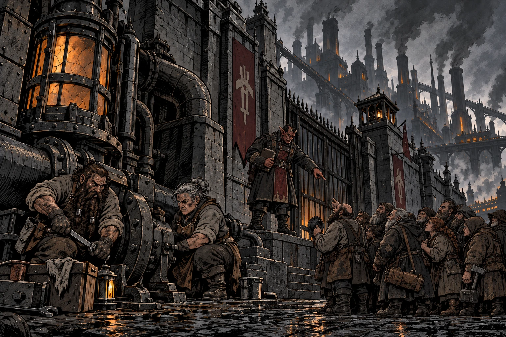
Others wander, traveling in groups large or small, selling their technological skills to whomever they must to survive, a displaced people who help build the industrial age of chaos glass but rarely see its benefits. But many simply try to find a place to settle that will take them in -- a harder task with each passing year as prejudice against poor, dirty dwarves grows and grows, stoked by hobgoblin captains and autocrats.
IV. The Endless Quiet
Halflings survive the Godfall in body, but their shared ancestral mind is silenced forever
As the First Ones die, halflings across the world stand stunned, in silence, as the Quiet descends upon them all, at once. The ancestral mind that all halflings once shared, and lost together at the Godfall, was not merely a magical ability or, as some outsiders thought, a telepathic trick. It was their history, their stories, their songs, and it made every halfling part of one extended family. Halflings who had always been able to recognize one another as kin suddenly met as strangers.
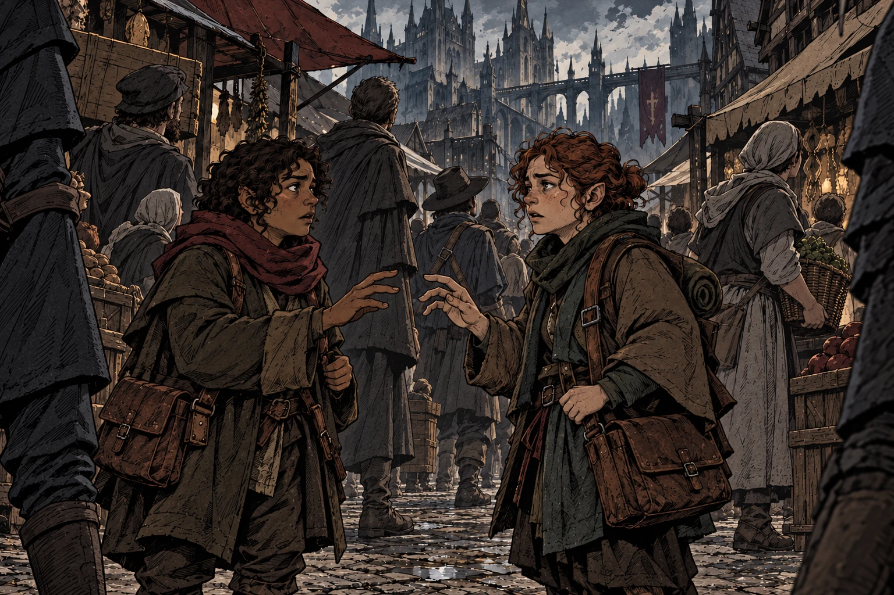
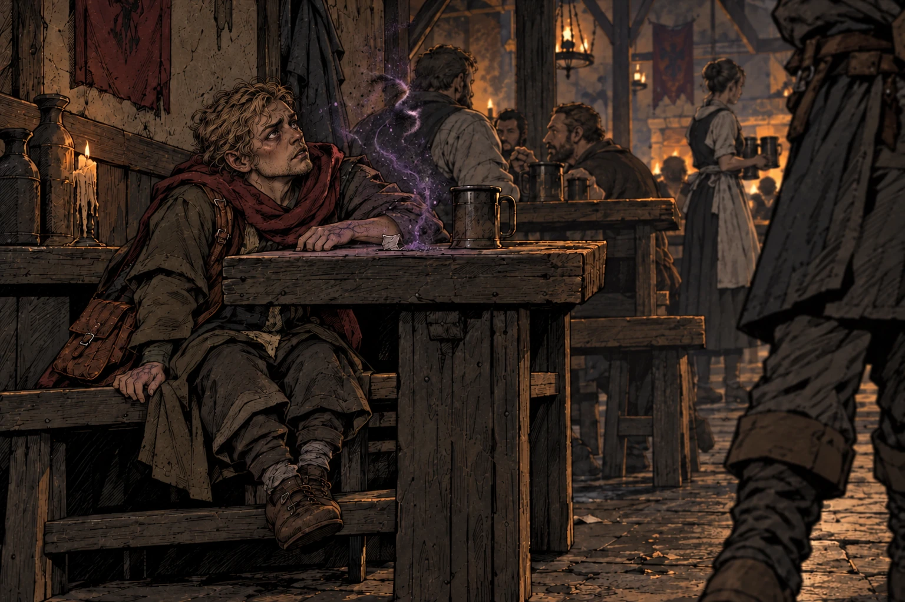
Many halflings now try to replace these lost memories, to fill the emptiness inside them, with something. Some turn to written records, to contracts and account books; some become ruthless bankers and Chardonian financiers. Others try to build family without memory, through vows and mutual aid; or through genealogies and songs and stories. Some turn to chaos glass, drugs, or experimental magic to try to hear the ancestral mind once more: sometimes they hear something. What it is, no one can say for sure.
V. The Long Goodbye
The Godfall ends the long lives of the lizardfolk, who all grow old at once.
When the Tharzen Anzinakoa die in the Godfall, and the cycle of lizardfolk life is changed forever, they do not simply acquire human lifespans. Instead, their bodies suddenly begin reckoning the years that the magic of the Firstborn had held back.
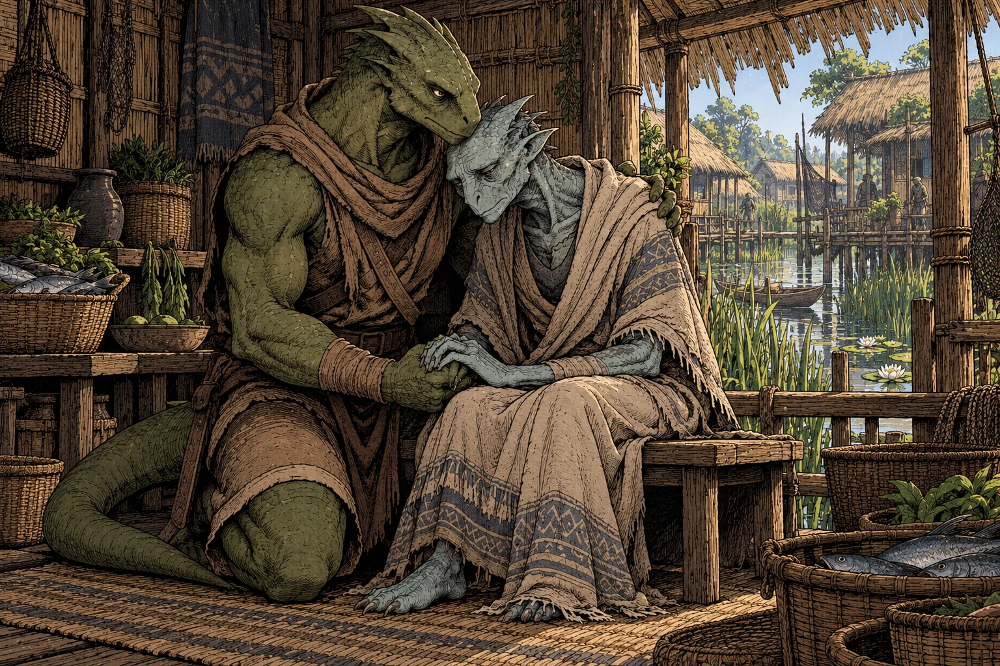
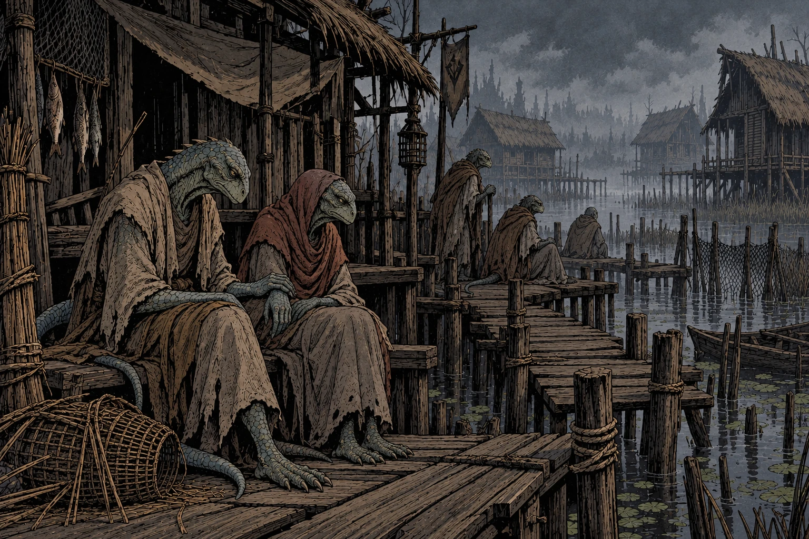
Elders age to death within days or months. Mature adults decline over the following years. The youngest survive for several decades, but lizardfolk reproduction and community life were shaped around long lives, low population turnover, and the guidance of elders and ancestors. They cannot adapt quickly enough. Whether reproduction itself also fails, or the last generations simply succumb to ecological collapse is not known, for no one bothers to record the lives of the last lizardfolk communities who spend their last decades watching their entire species grow old together.
VI. The Great Unchaining
The dead of Thark sets every orc free at once
As one, the orcs awake from a long, terrible nightmare, and see the world with their own eyes for the first time. With Thark dead, every orc gets the choice to decide the meaning of their own life.
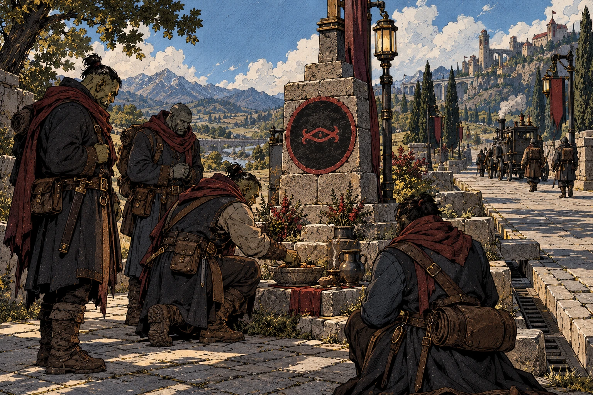
Some regard Cha'mutte as the Liberator, and build a cult around the person who gave them the first genuine choice their species ever possessed. Others believe that celebrating this gift honors a genocide, and weep for those who died to give them freedom.
The orcs, thrust upon a world in upheaval, are, for the first time, free to adapt and change. Liberator cults build honoring Cha'mutte at crossroads; penitent orc communities travel the world, believing the orcs owe restitution for benefiting from the Godfall; warrior societies freely preserve the old life that is all they ever knew; radical anti-slavery movements become implacable enemies of hobgoblin rule; and mercenary companies led by orcs insist theat choosing to fight and being compelled to fight are fundamentally different.
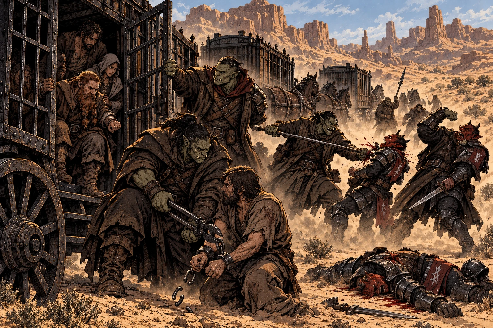